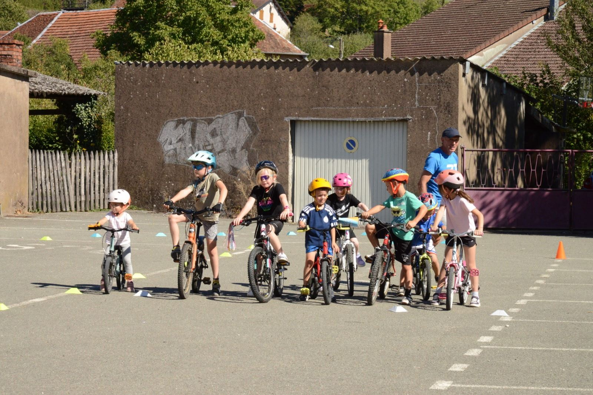

01
Duathlon
Course à pied, vélo, course à pied : un enchaînement complet, au cœur de notre projet sportif.
Le duathlon apprend à gérer son effort, à passer d'une discipline à l'autre et à rester concentré jusqu'à l'arrivée. Chez les jeunes, les distances sont courtes et adaptées à l'âge : l'accent est mis sur l'apprentissage, les transitions et le plaisir de terminer ensemble.